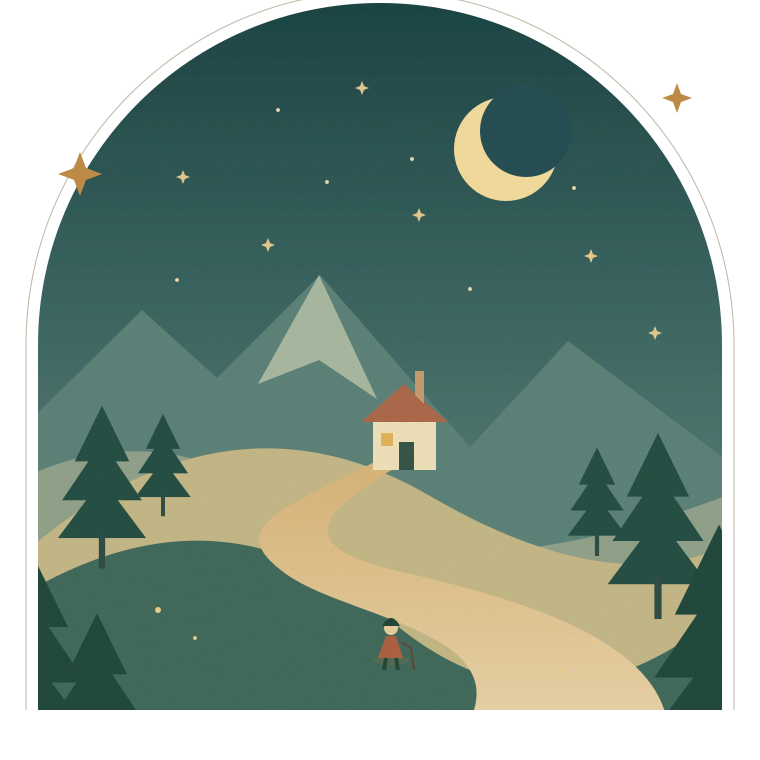

✦ A PERSONAL CHRONICLE · SINCE AUG 1996
한 걸음씩,
이야기가 되다.
Keeseok Jeong 게임 · MR 소프트웨어 엔지니어
지나온 시간과 만들어가는 것들.
1996년 8월에서 시작된, 아직 쓰고 있는 이야기.
모든 여정은 작은 시작에서.

경력의 발자취, 호기심의 기록아래로, 다음 장으로 ↓
THE PERSON BEHIND THE STORY
게임 속 세계에서, 현실 너머로.
CHAPTER 01 / THE JOURNEY
시간을 따라 걷다.
하나의 시작에서, 여러 개의 장으로.
지나온 경력을 시간 순서대로 기록합니다.
2024년 이력서 기준 · 마지막 기재 경력: 2024년 4월. 연도만 확인된 기간은 연도만 표시합니다.
학력
세계를 만드는 기초.
수상
다음 장을 준비하고 있습니다.
2024년 4월 이후의 경력은 확인 후 추가합니다.